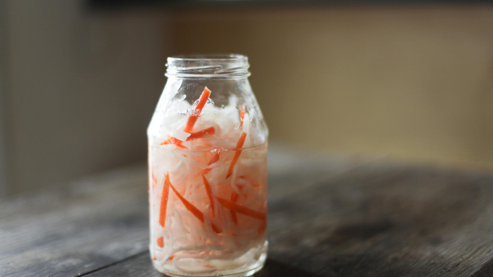

Zurück zur Übersicht
Banh-mi-Pickles
Süßsauer eingelegtes Gemüse in Stiften, das mindestens einen Tag im Kühlschrank durchzieht. Passt in Banh mi, zu Bowls und Gegrilltem.
- Zeit
- 15 Min.
- Schwierigkeit
- leicht
- Kategorie
- Beilagen & Salate
- Ernährung
- vegan
Zutaten
Portionen
Gemüse
- 1Zwiebel
- 2Karotten
- 1Gurke
- 1 BundRadieschen
Für den Sud
- 150 mlReisessig oder Apfelessig
- 150 mlWasser
- 4 ELAgavendicksaft
- 1 ELKnoblauch, gehackt
- 1 TLSzechuanpfeffer, gemahlen (optional)
- 1 TLIngwerpulver (optional)
- 1 TLSalz
Zubereitung
- Die Gurke halbieren und die Kerne mit einem Teelöffel auskratzen. Das Gemüse in Stifte oder Streifen schneiden und in einen ausreichend großen, luftdicht verschließbaren Behälter füllen.
- Die Zutaten für den Sud verrühren und in den Behälter geben. Mindestens 1 Tag im Kühlschrank durchziehen lassen.
Meine Ergänzung: Die Zwiebel ist dazugekommen, und statt Reisessig geht auch Apfelessig. Szechuanpfeffer und Ingwerpulver sind optional.